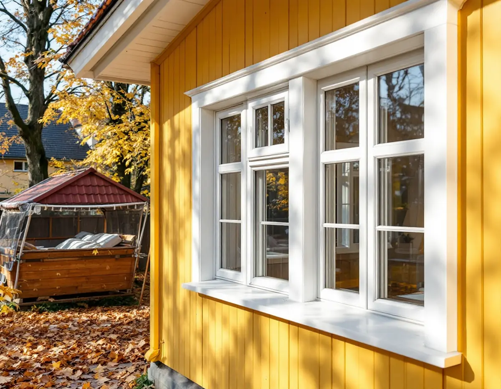
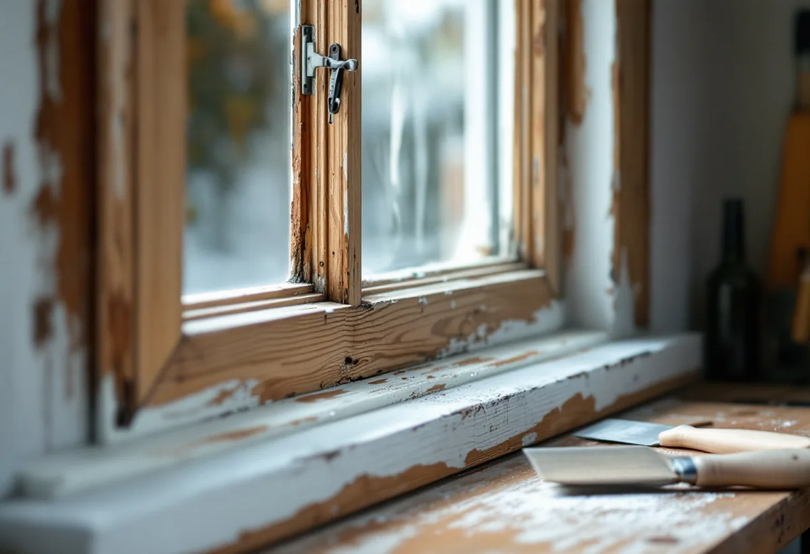

Besök och mätning
Vi bedömer karmar, bågar och glas och mäter upp varje fönster.

Ett fönsterbyte lönar sig bäst när de gamla fönstren är i dåligt skick.
Beskriv jobbet kort.
Något blev fel. Kontrollera uppgifterna eller ring 08 12 410 276.
Vi tittar på jobbet på plats innan du får offert.
Du ser vad som ingår och vad det kostar.
Vi drar av ROT direkt och sköter ansökan.
Geal Entreprenad AB, Bromma. Org.nr 559303-7566.

Är karm och bågar friska kan tätning eller energiglas på insidan ge en bättre totalkalkyl. Geal hjälper dig att välja, byter eller renoverar fönstren och tar hand om smygar, bleck och anslutningar mot fasaden.
Boverkets energiguide sammanfattar valet tydligt. Att förbättra befintliga fönster ger oftast mindre energibesparing än nya, men kostar oftast mindre och kan därför ge en bättre totalkalkyl. Är fönstren i dåligt skick blir det tvärtom, eftersom en renovering då blir dyr. Ett typiskt fall där byte är motiverat är treglasfönster från 1970-talet där glaskassetten har slutat fungera och monteringen i instickskarmar ger stora energiförluster.
Äldre träfönster med friska karmar kan ofta renoveras. Bågarna tas loss, gammal färg och kitt skrapas bort även i kittfalsen, skadat trä lagas, glasen kittas om och snickerierna målas. Riksantikvarieämbetet påpekar att fönstersnickerier hör till de mest utsatta delarna av ett hus och behöver målas om oftare än resten av fasaden.
Innan något rivs ska gamla fogmassor och kitt undersökas. Boverket påminner om att fogmassor kan innehålla PCB eller asbest, som är saneringspliktigt, och att kitt kan innehålla asbest som ska hanteras enligt arbetsmiljöreglerna.
Fönster isolerar sämre än väggen runt omkring. Enligt Boverket motsvarar även de bästa fönstren bara ungefär fem centimeter vanlig isolering, och ett gammalt fönster släpper igenom betydligt mer. Ju lägre U-värde, desto mindre värme går förlorad, och som tumregel uppstår inget kallras när U-värdet är lägre än 1,0.
Jämför U-värdet för hela fönstret – glas, båge och karm – och inte bara glaset. Tänk också på att bättre isolerade fönster får en kallare utsida, så att det oftare bildas kondens utvändigt, och att grövre profiler släpper in mindre dagsljus. Olika glas ger dessutom olika solskydd, ljudisolering och dagsljusinsläpp.
Det enklaste steget är att täta: isoleringen runt karmen, drevningen och listerna mellan båge och karm. Nästa steg är att byta eller komplettera innerrutan med energiglas eller en tvåglaskassett. I ett äldre hus kan ventilationen vara beroende av luft som läcker in kring fönstren, så tilluften behöver kontrolleras när huset blir tätare.
Fönstren är en stor del av ett hus uttryck. Boverket lyfter fram material, proportioner, indelning och profilering, och att äldre glas och invändig profilering kan betyda mycket för hur ett rum upplevs. Ett nytt fönster bör därför anpassas till husets ålder och karaktär, med samma indelning och liknande profiler.
Behålls originalfönstren är det lättare att bevara kulturvärdet, och det går åt mindre nya material. Finns munblåst eller valsat glas kvar kan det flyttas till ytterbågarna när innerbågen får energiglas, så att utsidan behåller sitt gamla utseende. På ett hus där fönstren redan bytts mot olämpliga modeller kan ett nytt byte i stället bli ett sätt att återställa utseendet.
Ofta hänger fönstren ihop med resten av väggen: ruttna smygar, trasiga bleck eller en fasad som ska tilläggsisoleras. Läs mer om fasadrenovering och om takfönster om även taket berörs.
Boverket räknar byte eller ändring av fönster som en åtgärd som kan påverka byggnadens karaktärsdrag och därmed vara en fasadändring. För en- och tvåbostadshus krävs ändå inget bygglov för fasadändring sedan 1 december 2025, om inte huset omfattas av skyddsbestämmelser, är särskilt värdefullt, ligger i ett särskilt värdefullt område eller planen har utökad lovplikt.
För flerbostadshus inom detaljplan krävs lov när fönstren sitter i en fasad mot gata, park eller annan allmän plats. I Stockholms stad ger Stadsmuseets klassificeringskarta en första indikation; i övriga kommuner frågar du bygglovsenheten. Lovfritt betyder inte kravlöst – varsamhetskravet gäller, och bytet får inte strida mot detaljplanen.
Vi bedömer karmar, bågar och glas och mäter upp varje fönster.
Du får ett underlag för vilka fönster som bör bytas och vilka som kan renoveras.
Lovfrågan, gamla fogmassor och kitt samt ventilationen ses över.
Fönstertyp, glas, montage, smygar, bleck och ROT-avdrag står specificerat.
Gamla fönster tas ur och nya monteras; vid kyla kan arbetet göras med fönstertält.
Drevning, tätning, foder och bleck görs klart och vi går igenom resultatet.
I småhus ger det ROT att reparera eller byta fönster, montera bullerglas och isolerglas och byta fönsterbleck, enligt Skatteverket. Solfilm och myggnät ger inte avdrag. Avdraget är 30 procent av arbetskostnaden, högst 50 000 kronor per person och år och högst 75 000 kronor för ROT och RUT tillsammans. Själva fönstren räknas som material. Geal drar avdraget direkt på fakturan.
I bostadsrätt ger bara arbete på insidan av befintliga fönster avdrag, till exempel att byta glaset i innerbågen eller montera tätningslist. Att byta fönster eller arbeta mellan bågarna eller på utsidan ger inte ROT.
Antal och storlek på fönstren, material i båge och karm, vilket glas som väljs, om indelning och profiler ska anpassas till ett äldre hus, hur mycket smygar, foder och bleck som behöver göras om och om övre plan kräver ställning. Sanering av gammal fogmassa påverkar också.
Efter ett kostnadsfritt platsbesök får du ett skriftligt kostnadsförslag med fönster, montage och ROT-avdrag specificerat.
Panel, puts och tilläggsisolering.
Fasadrenovering i Stockholm →Fasad, fönster och invändig målning.
Målare i Stockholm →Nya fönster i taket.
Takfönster →Hela huset i en entreprenad.
Villarenovering →Eller ring 08 12 410 276, mån–fre 08–17.
Beskriv jobbet kort.
Något blev fel. Kontrollera uppgifterna eller ring 08 12 410 276.